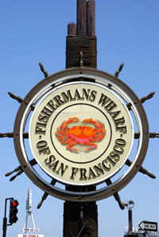

Your Tour Guide
Fishermans Wharf
 Fisherman's Wharf gets its name and neighborhood characteristics from the city's early days during the Gold Rush where Italian emigre fishermen settled in the area and fished for the Dungeness Crab.
From then until present day it remained the home base of San Francisco's fishing fleet.